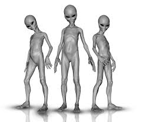
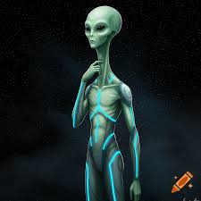

| Nordics | Blonde, blue-eyed humanoids (6–7 ft), often described as benevolent and spiritually advanced. | |
| Tall Whites | Reported in Nevada; 7+ ft tall, pale skin, large eyes. Associated with military base encounters. |  |
| Reptilians (Tall) | 6–9 ft scaly humanoids with vertical pupils; featured in conspiracy theories and ancient astronaut hypotheses. | |
| Orions | Alleged extraterrestrials from Orion constellation; described as tall, muscular, sometimes with dark skin or red eyes. |  |
| Pleiadians | Blonde, tall humanoids from the Pleiades star cluster; said to monitor Earth’s spiritual evolution. | |